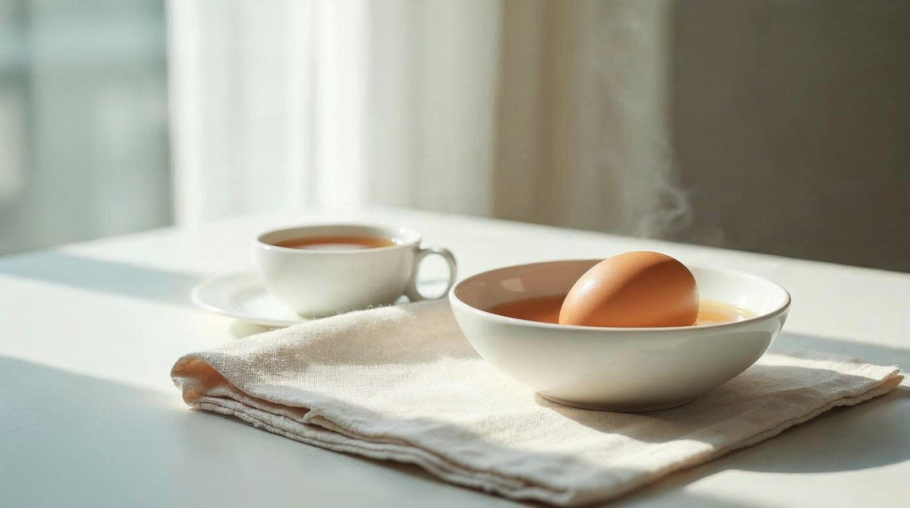
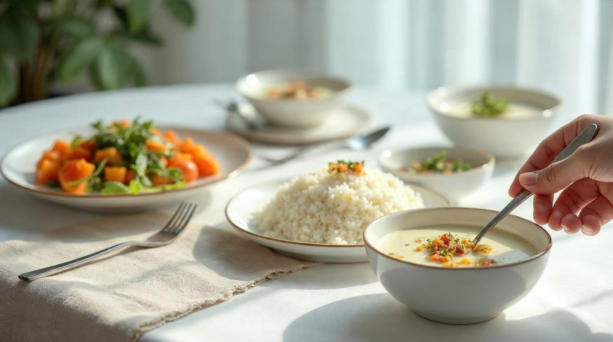
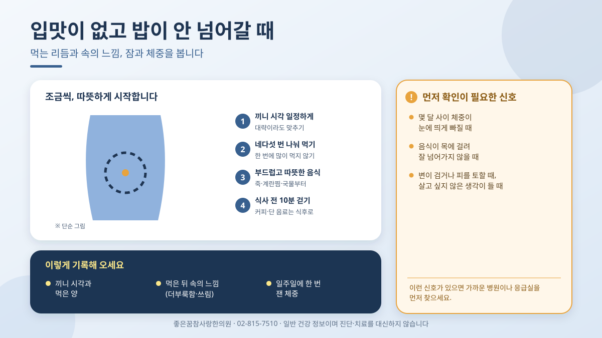

이종호 한의사 감수좋은꿈참사랑한의원 대표원장 (한의사 면허번호 19769)발행 2026-11-26 · 수정 2026-11-26
이 글의 차례
점심시간이 되어 동료들이 메뉴를 고르는데, 저는 아무것도 먹고 싶지 않습니다. 억지로 따라가 국밥 앞에 앉았지만 몇 숟가락 뜨고 나니 더는 넘어가지 않습니다. 남은 밥을 보며 괜히 미안해지고, 오후가 되면 기운이 없어 커피만 찾게 됩니다.
입맛이 없다는 것은 단순히 덜 먹는다는 뜻이 아닙니다. 먹고 싶은 마음이 생기지 않거나, 먹으려 해도 몸이 받아 주지 않는 상태입니다. 며칠이면 지나가는 일도 있지만, 몇 주씩 이어지면 기운과 잠, 기분까지 함께 가라앉기 쉽습니다.
진료실에서 이런 말씀을 자주 듣습니다. "다들 살 빠져서 좋겠다고 하는데, 저는 하나도 좋지 않아요." 주변에서는 부러워하지만 정작 본인은 먹는 즐거움을 잃은 허전함과 기운 없음 속에 지내고 계십니다. 그 마음을 먼저 알아 드리고 싶습니다.
식욕부진은 원인이 하나가 아닙니다. 속이 불편해서 못 먹는 경우, 마음이 지쳐 먹고 싶지 않은 경우, 약이나 다른 병 때문에 입맛이 떨어진 경우, 생활 리듬이 흐트러진 경우가 서로 겹쳐 있습니다. 이 글에서는 그 갈래를 나눠 보고, 다시 밥맛을 찾아가는 길을 함께 정리해 보겠습니다.
왜 입맛이 떨어질까요
배고픔과 입맛은 비슷해 보여도 조금 다릅니다. 배고픔은 몸에 에너지가 필요하다는 신호이고, 입맛은 무언가를 먹고 싶다는 마음입니다. 두 가지가 함께 움직일 때 우리는 자연스럽게 밥상 앞에 앉고, 맛있게 먹고, 적당히 배부르면 숟가락을 놓습니다.
이 신호는 위와 장, 뇌, 호르몬이 서로 주고받으며 만들어집니다. 위가 비면 배고픔 신호가 올라가고, 음식이 들어오면 포만 신호가 나옵니다. 그런데 위가 음식을 잘 내려보내지 못하거나, 마음이 지쳐 뇌가 즐거움을 덜 느끼거나, 몸에 염증이나 다른 병이 있으면 이 신호가 흐려집니다.
냄새와 맛을 느끼는 감각도 입맛에 큰 몫을 합니다. 감기를 앓고 나서 냄새를 잘 못 맡으면 밥맛이 없어지는 것처럼, 코와 혀의 감각이 무디어지면 입맛도 함께 떨어집니다. 나이가 들면서 이 감각이 조금씩 약해지는 것도 어르신의 입맛이 줄어드는 까닭 가운데 하나입니다.
한의학에서는 입맛을 비위(脾胃)의 기운과 가장 가깝게 보아 왔습니다. 비위가 허하면 먹고 싶은 마음이 없고 조금만 먹어도 배가 부르며, 몸이 무겁고 기운이 없다고 여겼습니다. 걱정이 많으면 비(脾)가 상한다는 말도 있어, 저는 입맛을 볼 때 마음의 무게도 함께 여쭙습니다.
식욕부진의 갈래, 이렇게 나눠 봅니다
속이 불편해서 못 먹는 경우
먹고 싶은 마음은 있는데 몇 술만 떠도 명치가 꽉 차고, 더부룩하거나 속이 쓰려서 숟가락을 놓게 되는 모습입니다. 위가 음식을 받아들이고 내려보내는 힘이 약해진 경우가 많습니다. 이때는 위와 식사 방식을 먼저 살핍니다.
마음이 지쳐 먹고 싶지 않은 경우
배가 고픈지도 잘 모르겠고, 무엇을 먹어도 맛이 없으며, 먹는 일이 귀찮게 느껴지는 모습입니다. 큰일을 겪은 뒤, 오래 긴장한 뒤, 기분이 가라앉은 시기에 흔합니다. 잠과 흥미, 기분이 함께 떨어졌다면 마음 쪽을 꼭 함께 살핍니다.
기운이 바닥나 먹을 힘이 없는 경우
오래 앓고 난 뒤, 큰 수술이나 출산 뒤, 무리한 일정을 지나온 뒤처럼 몸 전체가 지친 모습입니다. 먹어야 기운이 나는데 기운이 없어 먹지 못하는 고리에 빠지기 쉽습니다. 이때는 조금씩 자주, 쉬운 음식부터 다시 시작합니다.
약이나 다른 병과 관련된 경우
새로 드시기 시작한 약이 있거나, 갑상선이나 혈당, 간과 신장 쪽 문제가 있거나, 몸에 염증이 있을 때에도 입맛이 떨어질 수 있습니다. 이 갈래는 내과 검사로 확인하는 것이 먼저라, 저는 필요하다고 판단되면 내과 진료를 함께 권합니다.
체중이 빠지고 있다면 함께 봅니다
입맛이 없을 때 가장 먼저 확인하고 싶은 것은 체중입니다. 일부러 줄이지 않았는데 몇 달 사이 체중이 눈에 띄게 빠졌다면, 입맛만의 문제가 아닐 수 있습니다. 이때는 내과에서 혈액검사와 필요한 검사를 받아 보시길 권합니다.
집에 체중계가 있다면 일주일에 한 번, 같은 요일 같은 시각에 재서 적어 보세요. 아침에 일어나 화장실에 다녀온 뒤 재는 것이 비교하기 좋습니다. 체중계가 없다면 바지 허리가 헐렁해졌는지, 반지나 시계가 느슨해졌는지도 단서가 됩니다.
체중이 크게 변하지 않았는데 입맛만 없다면, 생활 리듬과 속, 마음을 차례로 살피며 천천히 밥맛을 되찾아 가는 쪽으로 갑니다. 숫자를 확인하는 것만으로도 걱정의 크기를 가늠할 수 있어 마음이 한결 가벼워지는 분이 많습니다.
입맛을 흔드는 생활 습관들
커피와 단 음료는 잠깐 배고픔을 잊게 만들어 끼니를 건너뛰게 합니다. 오전 내내 커피로 버티다 점심 때 입맛이 없다는 분이 많은데, 이럴 때는 커피 시각을 식사 뒤로 옮겨 보시길 권합니다.
끼니 시각이 들쭉날쭉한 것도 입맛을 흐립니다. 몸은 정해진 시각에 배고픔 신호를 보내도록 익숙해지는데, 매일 시각이 다르면 그 신호가 약해집니다. 대략 같은 시각에 밥상 앞에 앉는 것만으로도 입맛이 조금씩 돌아오는 경우가 있습니다.
잠이 모자라면 입맛도 흔들립니다. 늦게 자고 아침에 쫓기듯 나가면 아침은 건너뛰고, 오후에는 단 것만 당기며, 정작 식사 시간에는 밥맛이 없습니다. 움직임이 너무 적은 날에도 몸은 배고픔을 덜 느낍니다.

치아와 삼킴도 입맛과 이어져 있습니다
씹는 것이 불편하면 먹는 일 자체가 힘들어집니다. 잇몸이 붓거나, 틀니가 맞지 않거나, 이가 시리면 자연스럽게 부드러운 음식만 찾게 되고, 그러다 보면 먹는 양도 줄어듭니다. 입맛이 없다고 하시는 분 가운데 실제로는 씹기가 불편한 분이 적지 않습니다.
삼킬 때 걸리는 느낌이 있거나, 물을 마시다 자주 사레가 들린다면 그것도 함께 말씀해 주세요. 목에 뭔가 걸린 듯한 느낌이 긴장과 함께 오는 경우도 있지만, 실제로 음식이 잘 내려가지 않는다면 확인이 필요합니다. 치과와 이비인후과, 내과 진료를 함께 권하는 이유입니다.
입 안이 자주 헐거나 혀가 따가워도 밥맛이 떨어집니다. 입 마름이 심하면 마른 음식이 잘 넘어가지 않습니다. 이런 작은 불편들이 쌓여 입맛을 잃게 만들기도 하니, 입 안의 사정도 빠뜨리지 말고 알려 주세요.
예를 들면 이런 경우입니다
실제 어느 분의 사연이 아니라, 진료실에서 자주 보는 모습을 바탕으로 그려 본 장면입니다.
예를 들어 이직이나 이사처럼 큰 변화를 겪은 뒤 입맛이 뚝 떨어진 분이라면, 속보다 긴장과 잠이 먼저 흔들린 경우가 많습니다. 이럴 때는 밥을 억지로 늘리기보다 잠자리에 드는 시각과 하루 한 끼라도 편하게 먹는 자리를 먼저 만들어 보자고 말씀드립니다.
혼자 지내시며 끼니를 대충 때우는 어르신이라면, 입맛이 없어 덜 드시고, 덜 드시니 기운이 없어 장을 보러 나가기도 힘든 고리에 빠지기 쉽습니다. 가족과 함께 식사 시각과 쉬운 반찬을 정리해 보고, 치아와 삼키는 데 불편은 없는지도 함께 살핍니다.
먼저 이렇게 여쭙니다
- 입맛이 떨어진 것은 언제부터이고, 그 무렵 어떤 일이 있었나요?
- 체중은 얼마나 변했나요? 일부러 줄인 것인가요?
- 배가 고프지 않은 건가요, 먹으면 금방 배가 차는 건가요?
- 속쓰림, 더부룩함, 메스꺼움, 삼키기 불편함이 있나요?
- 잠과 기분, 하고 싶은 일에 대한 흥미는 어떤가요?
- 새로 드시기 시작한 약이나 영양제가 있나요?
여성분이라면 생리 주기와 임신 가능성도 여쭙습니다. 최근 받으신 건강검진 결과지가 있다면 함께 보며, 빈혈이나 갑상선, 혈당 쪽에 눈여겨볼 숫자가 없는지 확인합니다.
일상에서 먼저 해 볼 수 있는 것
입맛은 억지로 끌어올리기보다 몸이 다시 먹고 싶어지도록 환경을 만들어 주는 쪽이 오래갑니다. 아래 가운데 하나만 골라 2주쯤 이어 가 보세요.
- 끼니 시각을 대략 일정하게 맞추기
- 한 번에 많이 먹으려 하지 말고, 하루 네다섯 번으로 나눠 조금씩 먹기
- 국물이나 죽, 계란찜처럼 부드럽고 따뜻한 음식부터 시작하기
- 커피와 단 음료는 식사 뒤로 옮기기
- 식사 전 십 분쯤 가볍게 걷기
- 좋아하는 사람과 함께 먹는 끼니를 일주일에 한두 번 만들기
밥 한 공기를 다 비워야 한다는 부담은 잠시 내려놓으세요. 반 공기라도 편하게 드셨다면 충분합니다. 작은 그릇에 담아 먹으면 다 먹었다는 기분이 들어 다음 끼니가 한결 수월하다는 분도 계십니다.
냄새와 색이 입맛을 돋우기도 합니다. 향긋한 나물, 따뜻한 된장국, 알록달록한 반찬처럼 눈과 코가 먼저 반기는 음식을 곁들여 보세요. 반대로 기름 냄새나 진한 양념 냄새가 부담스럽다면 담백한 음식부터 시작하시면 됩니다.
물은 끼니 사이에 조금씩 드시고, 식사 중에는 많이 마시지 않는 편이 좋습니다. 밥 먹기 직전에 물을 많이 드시면 그만큼 배가 일찍 차서 먹을 수 있는 양이 줄어듭니다.
한의원에서 함께 살필 수 있는 경우
- 내과 검사에서 큰 이상은 없다는데 입맛이 몇 주째 돌아오지 않는 경우
- 조금만 먹어도 명치가 꽉 차고 더부룩해 숟가락을 놓게 되는 경우
- 큰일을 겪거나 오래 긴장한 뒤 입맛과 잠이 함께 떨어진 경우
- 앓고 난 뒤나 출산 뒤 기운이 바닥나 먹을 힘이 없는 경우
좋은꿈참사랑한의원에 처음 오시면 먼저 아래 '먼저 확인이 필요한' 신호가 없는지부터 봅니다. 그다음 맥을 짚고 혀를 보며, 배를 눌러 윗배의 상태를 확인하고 잠과 기분, 대변, 체중 변화를 함께 정리합니다.
그 뒤 진찰한 내용을 바탕으로 침, 뜸, 한약 상담, 생활 조정 가운데 지금 상태에 맞는 것을 정합니다. 속이 막혀 못 먹는 경우와 기운이 빠져 못 먹는 경우, 마음이 지쳐 못 먹는 경우는 살피는 방향이 다릅니다. 한약을 상의할 때는 지금 드시는 약을 모두 확인하고 신중하게 정합니다.
체중이 빠지고 있거나 검사가 필요해 보이는 모습이 있으면 내과 진료를 함께 권합니다. 기분이 오래 가라앉아 있다면 정신건강의학과 상담도 함께 생각해 보시도록 말씀드립니다. 다른 곳에서 받은 약은 처방한 의사와 상의 없이 멈추지 않으시도록 안내합니다.
이렇게 기록해 오시면 상담이 쉬워집니다
입맛은 날마다 오르내려서, 짧은 기록이 큰 도움이 됩니다. 2주만 적어 보세요.
- 끼니 시각과 먹은 양(평소의 몇 분의 몇인지)
- 먹고 싶었던 음식과 먹기 싫었던 음식
- 먹은 뒤 속의 느낌(편함, 더부룩함, 쓰림, 메스꺼움)
- 일주일에 한 번 잰 체중
- 잠든 시각과 깬 시각, 그날의 기분
- 드시는 약과 커피, 술
기록은 잘 쓰려고 애쓰실 필요가 없습니다. "아침 거름, 점심 반 공기, 저녁 죽 조금"처럼 짧게 적어도 충분합니다.
입맛이 조금이라도 돌았던 날이 있다면 그날 무엇이 달랐는지 꼭 적어 두세요. 누구와 먹었는지, 어디서 먹었는지, 전날 잠은 어땠는지가 다시 밥맛을 찾아가는 길잡이가 됩니다.

다시 밥상이 반가워지는 날까지
입맛을 잃으면 하루의 즐거움 하나를 잃은 것 같은 허전함이 남습니다. 끼니마다 무엇을 먹어야 할지 고민하는 것도, 남긴 밥을 보며 마음이 무거운 것도 지치는 일입니다. 그동안 애쓰셨다는 말씀을 먼저 드리고 싶습니다. 먹지 못하는 것을 의지가 약한 탓으로 여기실 필요는 없습니다.
밥맛은 대개 한 번에 돌아오지 않고, 어느 날 문득 무언가가 먹고 싶어지는 순간으로 찾아옵니다. 그 순간을 놓치지 않도록 이번 주에는 끼니 시각 맞추기 하나만 지켜 보세요. 다음에 오시면 입맛이 조금이라도 돌았던 날의 이야기부터 함께 나누겠습니다.
이런 증상은 먼저 확인이 필요합니다
- 일부러 줄이지 않았는데 몇 달 사이 체중이 눈에 띄게 빠지거나, 음식이 목에 걸려 잘 넘어가지 않는 경우
- 변이 검게 나오거나 피를 토하는 경우, 또는 살고 싶지 않다는 생각이 드는 경우
이런 신호가 있으면 한의원보다 가까운 병원이나 응급실을 먼저 찾으세요.
함께 읽으면 좋은 글
- 조금만 먹어도 금방 배가 부를 때는 무엇을 살펴보나요?
- 기분이 2주 넘게 가라앉고 잠·입맛·흥미가 떨어질 때는 어떻게 살피나요?
- 충분히 쉬어도 몸이 늘 피곤한 만성피로는 어떤 점을 살펴보나요?
- 가까운 사람을 떠나보낸 뒤 잠과 입맛이 돌아오지 않을 때는 어떻게 하나요?
- 소화가 오래 불편할 때 한의원에서는 무엇을 먼저 묻나요?

여쭙는 것
- 입맛이 떨어진 것은 언제부터이고, 그 무렵 어떤 일이 있었나요?
- 체중은 얼마나 변했나요? 일부러 줄인 것인가요?
- 배가 고프지 않은 건가요, 먹으면 금방 배가 차는 건가요?
생활에서 해 볼 것
- 끼니 시각을 대략 일정하게 맞추기
- 한 번에 많이 먹으려 하지 말고, 하루 네다섯 번으로 나눠 조금씩 먹기
- 국물이나 죽, 계란찜처럼 부드럽고 따뜻한 음식부터 시작하기
한의원에서 함께 살필 것
- 내과 검사에서 큰 이상은 없다는데 입맛이 몇 주째 돌아오지 않는 경우
- 조금만 먹어도 명치가 꽉 차고 더부룩해 숟가락을 놓게 되는 경우
- 큰일을 겪거나 오래 긴장한 뒤 입맛과 잠이 함께 떨어진 경우
먼저 확인이 필요한 신호
- 일부러 줄이지 않았는데 몇 달 사이 체중이 눈에 띄게 빠지거나, 음식이 목에 걸려…
- 변이 검게 나오거나 피를 토하는 경우, 또는 살고 싶지 않다는 생각이 드는 경우
한눈에 보는 표
| 구분 | 핵심 |
|---|---|
| 여쭙는 것 | 입맛이 떨어진 것은 언제부터이고, 그 무렵 어떤 일이 있었나요? 체중은 얼마나 변했나요? 일부러 줄인 것인가요? |
| 생활에서 해 볼 것 | 끼니 시각을 대략 일정하게 맞추기 한 번에 많이 먹으려 하지 말고, 하루 네다섯 번으로 나눠 조금씩 먹기 |
| 한의원에서 함께 살필 것 | 내과 검사에서 큰 이상은 없다는데 입맛이 몇 주째 돌아오지 않는 경우 조금만 먹어도 명치가 꽉 차고 더부룩해 숟가락을 놓게 되는 경우 |
| 먼저 확인이 필요한 신호 | 일부러 줄이지 않았는데 몇 달 사이 체중이 눈에 띄게 빠지거나, 음식이 목에 걸려 잘 넘어가지 않는 경우 변이 검게 나오거나 피를 토하는 경우, 또는 살고 싶지 않다는 생각이 드는 경우 |
자주 묻는 질문
입맛이 없을 때 억지로라도 먹어야 하나요?
한 번에 많이 드시려 애쓰기보다 조금씩 자주, 부드럽고 따뜻한 음식부터 드시는 편이 부담이 적습니다. 체중이 계속 빠진다면 내과 진료와 함께 살펴보시길 권합니다.
입맛을 돋우는 한약이 따로 있나요?
입맛이 떨어진 까닭이 사람마다 달라서, 진찰을 먼저 한 뒤 지금 상태에 맞는지 함께 정합니다. 드시는 약이 있다면 모두 알려 주세요.
영양제나 영양 음료를 먹어도 되나요?
끼니를 거의 못 드시는 시기에는 도움이 될 수 있습니다. 다만 끼니를 대신하기보다 보태는 쪽으로 드시고, 드시는 제품 이름을 알려 주시면 함께 보겠습니다.
스트레스 때문에 입맛이 없는 것도 진료를 받을 수 있나요?
네, 마음의 긴장과 잠, 입맛은 서로 가깝게 얽혀 있어 함께 살핍니다. 기분이 오래 가라앉아 있다면 정신건강의학과 상담도 함께 권해 드립니다.
좋은꿈참사랑한의원은 재진 때 지난번 이야기부터 이어서 여쭙니다. 진료시간과 예약은 오시는 길에서 확인하세요.
어디서 상담받을 수 있나요?
좋은꿈참사랑한의원은 서울 동작구 만양로2길 2 신성빌딩 3층·5층(서울 동작구 상도동, 7호선 상도역 3번 출구 근처)에 있습니다. 한의사 3명(이종호 대표원장, 조영기 수석진료원장, 정원영 진료원장)이 진료합니다. 진료시간은 평일 09:30~20:00(점심 13:00~14:00), 토·일·공휴일 09:30~15:00이며, 방문 전 전화로 확인을 권합니다. 예약은 네이버 예약, 카카오톡 상담, 전화 02-815-7510로 받습니다.
이 글은 일반적인 건강 정보이며 개인의 진단이나 치료를 대신하지 않습니다. 증상이 있거나 복용 중인 약이 있다면 진료를 통해 확인하세요. 치료 효과는 개인마다 다를 수 있습니다.
작성 기준: 일반적으로 알려져 있는 건강 정보를 참고해 정리했습니다(대표원장 감수). 증상 기록은 1~2주 동안 하루 1회, 비슷한 시간에 적어 오시면 지난 상태와 비교하기 쉽습니다.